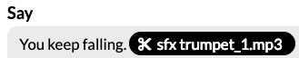

File names
File names cannot have spaces in them.
The Skill Flow Builder Editor makes it easy to build and test games.
Download Skill Flow Builder Editor
View the Amazon docs on using the Skill Flow Builder Editor:
When you start a new project in the Skill Flow Builder, you can use templates to see some sample games.
You can try these different games to get a sense of how the decision tree and sound effects works.
Amazon has blog posts about building games as well:
Drag and drop sounds and music in the Skill Flow Builder.
File names cannot have spaces in them.
Once your sounds are there, you can drag and drop them into the appropriate place in either:
The Source View:
You keep falling. [sfx trumpet_1.mp3]
The Guided View:

You can also use background music in the Source View. The music needs to be in the then block like the example below.
*then
bgm [sfx file_name.mp3]
Or
*then
bgm https://url-to-the-background-music.mp3
You can set a default voice for your skill, set different text to use different voices.
The Source View:
<voice name='Justin'>Ouch.</voice>
The Guided View:
You can also apply speech styles to your voices, called domains.
View the Domain Documentation
The Source View:
<amazon:domain name="conversational">
That was great work today.
</amazon:domain>
You can also apply speech effects to your voices.
View the Effect Documentation
The Source View:
<amazon:effect name="whispered">
I've got a secret.
</amazon:domain>
You can also apply speech emotions to your voices.
There is both emotion and intensity settings.
View the Emotion Documentation
The Source View:
<amazon:emotion name="excited" intensity="medium">
You've got mail!
</amazon:domain>
You can also apply emphasis to your voices.
View the Emphasis Documentation
The Source View:
I <emphasis level="moderate">really</emphasis> don't like computers.
More options can be found here here.